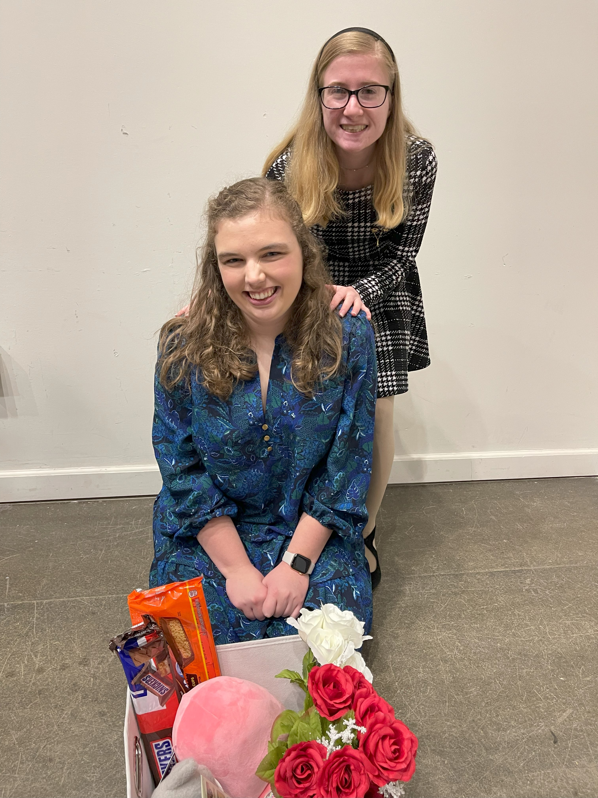
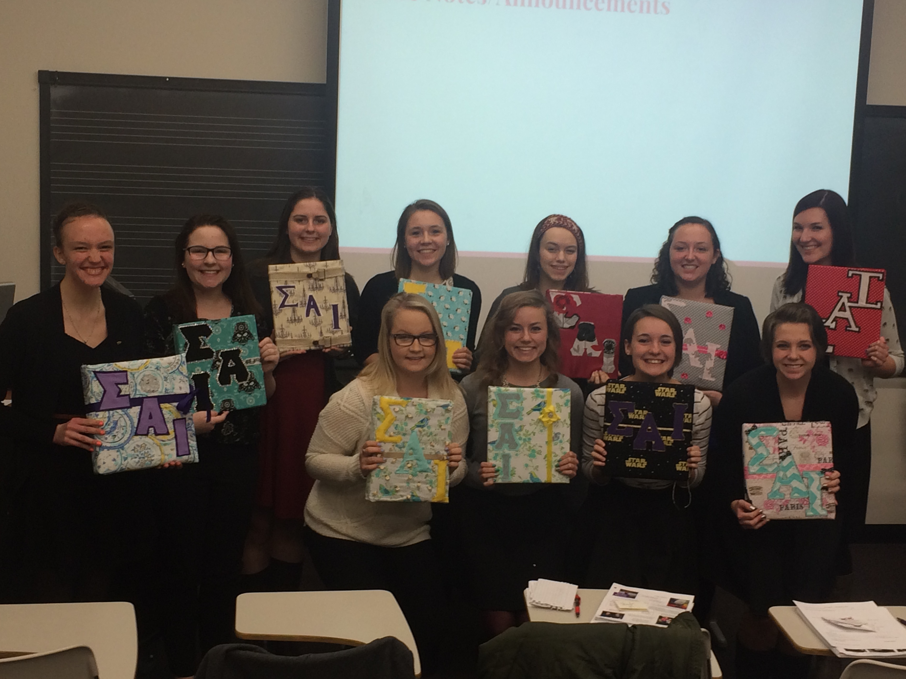
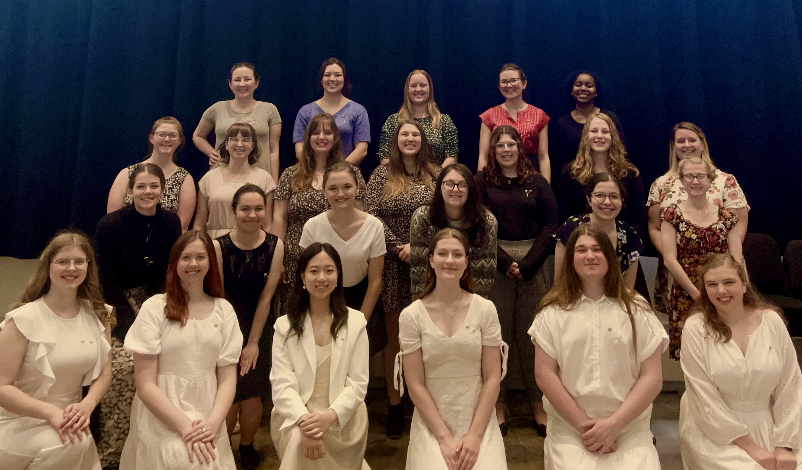

So, I've decided to join SAI. What now?
After you turn in your bid and attend the initial event, you will become an SAI Member-in-Training, or MIT. Your MIT season will last about 2 months, where you will prepare to become a full member. In this crucial period, you will do several things:
Meet your MIT class and VPM
At the inital event, you will get to meet the other members-in-training, which will be your MIT class for that semester.
You will also get acquainted with your Vice President or Membership, or VPM, who will help you class through the MIT process.
Meet your constellation
At some point in your MIT season, you will be given a big. She will serve as a guide and is there to help you with anything you might need during your MIT process.
Your big, her big, her big's big, and so on make up your constellation. Some constellations can have four active members at a time.
Other constellations only have two active members. Regardless of how many people are in your constellation, you will have plenty of love and support during your journey as an MIT.

Weekly class meetings
Each week, you'll meet with your MIT class and VPM. Your VPM will help you learn about Sigma Alpha Iota to prepare for the national exam. She'll also help your MIT class get started with planning your events.Attend chapter meetings
You'll have the opportunity to attend a few chapter meetings during your MIT season. Attending these meetings is a great way to connect with some of the current active members and get a preview of what chapter meetings are like!Make a binder
During your MIT season, you'll have a lot of papers to keep track of, including music, worksheets, and notes, so having a place to keep it all is important.
Our chapter has a tradition where our MITs get together with their constellations and make a binder. Grab a hot glue gun and some fabric and get creative!

MIT class events
Your MIT class will be responsible for holding four different events:- A musicale, where you'll each have an opportunity to perform and showcase your talent!
- A philanthropy event
- A sisterhood event
- A fundraiser
National Exam
Before you can join SAI, you need to pass a national exam to show what you've learned about Sigma Alpha Iota. Don't stress out too much, you can take it multiple times. The author of this website is TERRIBLE at taking exams and she passed it, so you have nothing to worry about.Initiation
At the end of your MIT period, you will have an initiation ceremony where you will become a full member!
(And then you'll take a bunch of pictures and probably go out to lunch afterward)
